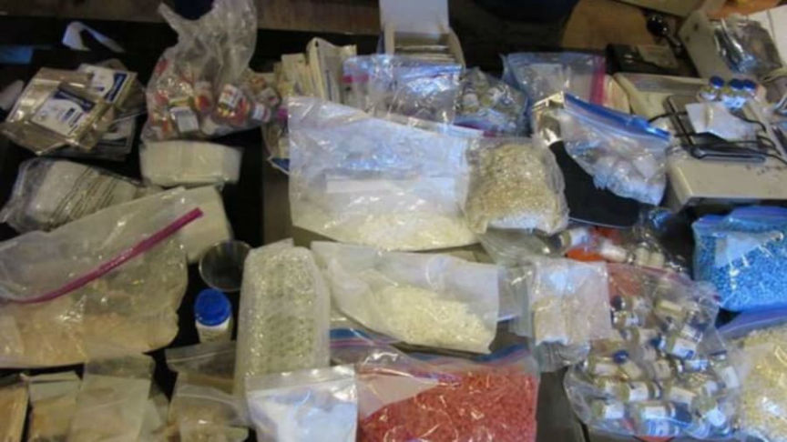
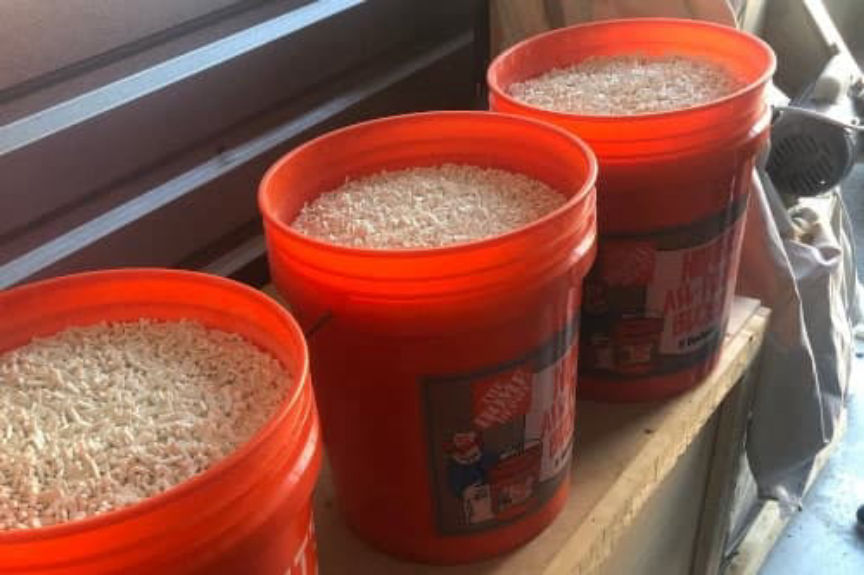
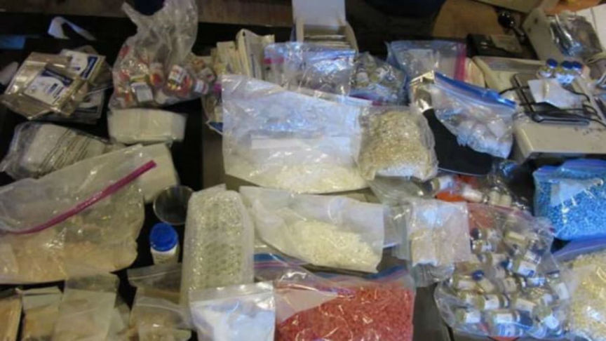
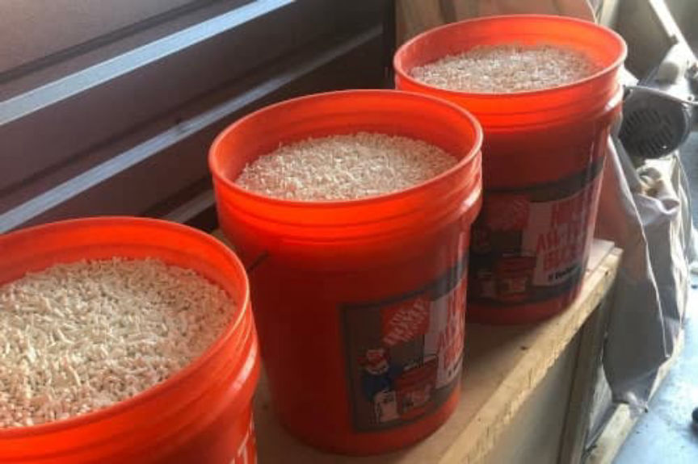

Dream Market Vendor Sinmed Pleads Guilty
~3 min read | Published on 2022-03-29, tagged Darkweb-Vendor, Pleaded-Guilty using 554 words.
A 47-year-old from New Jersey admitted selling drugs through a vendor account on Dream Market.
Chester Anderson, 47, of New Jersey, pleaded guilty to distributing a wide variety of drugs, including counterfeit Xanax, ketamine, methamphetamine, and GHB, through the “Sinmed” darkweb vendor account on Dream Market. Anderson also pleaded guilty to money laundering.
According to an announcement from the Manhattan District Attorney’s Office, Anderson ran the “Sinmed” vendor account from March 2016 to April 2019. Anderson’s accomplices, Jarrette Codd, 44, and Ronald MacCarty, 54, both of New Jersey, helped manufacture the drugs and procure the raw materials and equipment used to manufacture the drugs.
The investigation into Sinmed began in 2017 after investigators received tips about suspicious large ATM withdrawals. The investigators identified the individuals responsible for the withdrawals and, as a result, uncovered the “Sinmed” drug trafficking operation. During the investigation, law enforcement officers purchased roughly 10,000 counterfeit Xanax pills and undisclosed quantities of Ketamine and GHB from Sinmed. Investigators identified more than 1,000 packages mailed from the defendants to their customers throughout the United States. They intercepted some of the identified packages and seized 8,000 counterfeit Xanax pills.
“When our office received reports of suspicious activity at ATMs in New York and New Jersey, our talented investigators followed the money, using our state-of-the-art Cyber Lab to uncover a dark web counterfeit pill seller whose $2.3 million operations spanned the U.S.,” said Cy Vance, the District Attorney of New York County after the Sinmed bust. “Not only is this the first time state prosecutors in New York have taken down a dark web storefront, but this takedown also represents the largest pill seizure in New Jersey’s history. If you are engaging in illicit activity on the dark web, you are on notice: we know how to find you, we know how to put you out of business, and we know how to hold you criminally accountable.”

Further investigations into the operation revealed that Anderson and MacCarty had created a shell company to import large quantities of microcrystalline cellulose from China. Investigators also learned that the trio had used MacCarty’s cell phone repair store to purchase a pill press, a powder mixer, and punch dies.
According to the press release, the defendants had laundered cryptocurrency worth $2.3 million by using the cryptocurrency “as payment to load pre-paid debit cards,” according to the press release. The trio had withdrawn $1 million from ATMs in New Jersey collectively.
Investigators executed search warrants at the houses of the defendants in April 2019. The searches resulted in the seizure of approximately 600,000 Xanax pills, fentanyl-laced heroin, methamphetamine, ketamine, and GHB. Police also found and seized four pill press machines, two industrial mixers, and other equipment used in manufacturing the drugs. They also seized thousands of dollars in cryptocurrency and three firearms.

Anderson pleaded guilty to operating as a major trafficker, money laundering in the first degree, and conspiracy in the fourth and fifth degrees. He will be sentenced on June 22, 2022.
[DNL note: The police placed a GPS tracking device on Anderson’s car during the investigation. Anderson used a jammer. Lieutenant Jeffery Russo of the Investigations Division of the South Brunswick Police Department said that they knew when Anderson was “doing something illegal” because his car would dissapear from their tracker.]
archive.is/archive.org
Chester Anderson, 47, of New Jersey, pleaded guilty to distributing a wide variety of drugs, including counterfeit Xanax, ketamine, methamphetamine, and GHB, through the “Sinmed” darkweb vendor account on Dream Market. Anderson also pleaded guilty to money laundering.
According to an announcement from the Manhattan District Attorney’s Office, Anderson ran the “Sinmed” vendor account from March 2016 to April 2019. Anderson’s accomplices, Jarrette Codd, 44, and Ronald MacCarty, 54, both of New Jersey, helped manufacture the drugs and procure the raw materials and equipment used to manufacture the drugs.
The investigation into Sinmed began in 2017 after investigators received tips about suspicious large ATM withdrawals. The investigators identified the individuals responsible for the withdrawals and, as a result, uncovered the “Sinmed” drug trafficking operation. During the investigation, law enforcement officers purchased roughly 10,000 counterfeit Xanax pills and undisclosed quantities of Ketamine and GHB from Sinmed. Investigators identified more than 1,000 packages mailed from the defendants to their customers throughout the United States. They intercepted some of the identified packages and seized 8,000 counterfeit Xanax pills.
“When our office received reports of suspicious activity at ATMs in New York and New Jersey, our talented investigators followed the money, using our state-of-the-art Cyber Lab to uncover a dark web counterfeit pill seller whose $2.3 million operations spanned the U.S.,” said Cy Vance, the District Attorney of New York County after the Sinmed bust. “Not only is this the first time state prosecutors in New York have taken down a dark web storefront, but this takedown also represents the largest pill seizure in New Jersey’s history. If you are engaging in illicit activity on the dark web, you are on notice: we know how to find you, we know how to put you out of business, and we know how to hold you criminally accountable.”

Drugs seized during the Sinmed investigation.
Further investigations into the operation revealed that Anderson and MacCarty had created a shell company to import large quantities of microcrystalline cellulose from China. Investigators also learned that the trio had used MacCarty’s cell phone repair store to purchase a pill press, a powder mixer, and punch dies.
According to the press release, the defendants had laundered cryptocurrency worth $2.3 million by using the cryptocurrency “as payment to load pre-paid debit cards,” according to the press release. The trio had withdrawn $1 million from ATMs in New Jersey collectively.
Investigators executed search warrants at the houses of the defendants in April 2019. The searches resulted in the seizure of approximately 600,000 Xanax pills, fentanyl-laced heroin, methamphetamine, ketamine, and GHB. Police also found and seized four pill press machines, two industrial mixers, and other equipment used in manufacturing the drugs. They also seized thousands of dollars in cryptocurrency and three firearms.

Police found thousands of counterfeit Xanax pills in five gallon buckets
Anderson pleaded guilty to operating as a major trafficker, money laundering in the first degree, and conspiracy in the fourth and fifth degrees. He will be sentenced on June 22, 2022.
[DNL note: The police placed a GPS tracking device on Anderson’s car during the investigation. Anderson used a jammer. Lieutenant Jeffery Russo of the Investigations Division of the South Brunswick Police Department said that they knew when Anderson was “doing something illegal” because his car would dissapear from their tracker.]
archive.is/archive.org